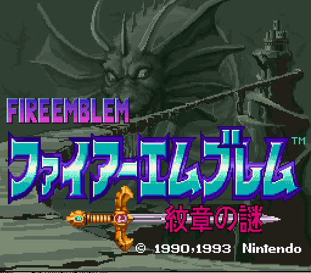
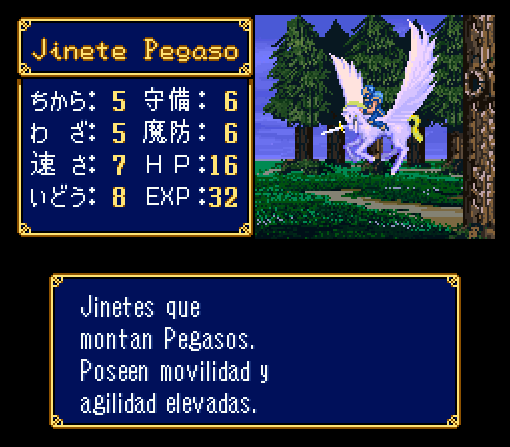
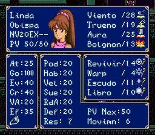
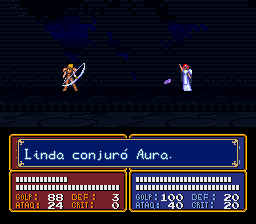
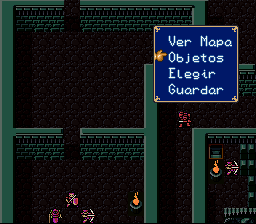

Fire Emblem: Mystery of the Emblem
- 
- 
- 
- 
- 
Año:
1993
Género:
Estrategia por turnos, rol
Consola:
Super NES
Versión de la traducción:
NO PUBLICADA
Porcentaje traducido:
35%
Mi mayor quebradero de cabeza actualmente. Este juego es el primer proyecto de traducción de un juego de rol en solitario que he hecho. O mejor dicho, que estoy haciendo.
Rol es sinónimo de toneladas de texto, y en este juego eso es completamente cierto. Hay montones de dialogos y objetos. El texto ya está prácticamente extraído y estoy terminando de programar un editor para manipularlo y reinsertarlo.
Todos los objetos y armas están traducidos, muchísimos nombres, menús y gráficos también. Las dos fuentes del juego están completamente editadas: la de los menús es propia de Lex, la otra es la oficial de los Fire Emblem de Game Boy Advance.
¿Cuando estará? Había una fecha concreta, 15 de Julio de 2014, y luego dije Agosto del mismo año, pero diversos problemas personales me impidieron sacarlo. Actualmente no hay una fecha fija para poder terminarlo, pero planeo que sea en torno al 2017.